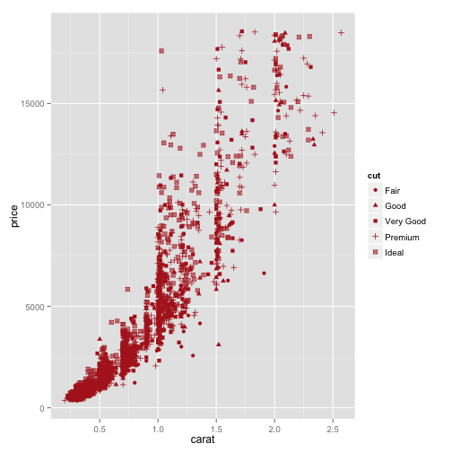

- Background
- Text, Text, Text
- Linguistics and Data Science
- 實作
Introduction to Data Science and Text Analytics
lecture 02
謝舒凱 Graduate Institute of Linguistics, NTU
大綱
Background- Text, Text, Text
- Linguistics and Data Science
- 實作
背景
- 文本分析 (text analysis) 在語言學裡 1950 年代即開始。文本自動分析 (text analytics) 則是受到大數據的影響在近幾年開始興起。
- Data typology: structured, semi-structured, unstructured data.
- Unstructured data refers to 'data that either does not have a pre-defined data model and/or does not fit well into relational tables', estimately represents c.a. 85% of enterprise data.
基本概念
三組人馬： (Text analytics | Text mining) 、 (NLP | Linguistics) 、 (Machine Learning | Statistics)
Text analytics (\(\simeq\) text mining) can be viewed as a set of (computational) linguistic (NLP) and (statistical) machine learning techniques that model and discover the information content of textual data for diffirent purposes (e.g., business intelligence, research, or investigation).
Textual data, textual information, textual knowledge.
- [Data Science] Linguistic/textual
dataprocessing - [Natural Language Processing] Linguistic/textual
informationprocessing - [Semantics, Ontologies, AI and Language Understanding] Linguistic/textual
knowledgeprocessing
- [Data Science] Linguistic/textual
人機處理資料的複雜度 (Das, 2013)


Text Analytics 目前的關注主題
- Text categorization
- Text clustering / similarity / association
- Named Entity Extraction / topic modelling / event detection
- Sentiment analysis / Opinion mining
- Text summarization
- Text in the social network
Data <> Story : Automated Data Scienctist
個人以為會發生的趨勢與需求
Making structured data from unstructured data (and vice versa).


Marrying structured and unstructured data

Source: (Hurwitz, J et al., 2013)
商業應用
文本挖掘（Text analytics）是透過軟體或其他商業流程來進行自然語言處理，從社群、網站、商業文字中找尋有用資訊。自然語言處理（Natural Language Processing，縮寫 NLP）是人機互動的關鍵，簡單來說就是讓電腦了解人的語言，然後將訊息轉化成一於電腦處理的形式以便儲存及利用。http://buzzorange.com/techorange/2015/06/08/text-analytics/
人文歷史、社會科學與生醫研究
- Text-mining as a Research Tool in the Humanities and Social Sciences
- Historical text mining
- Legal text mining
- Biochemical, medical text mining, .... 請自行 google
噢，也可以改造政府
DataTaipei: R client for Data.Taipei
功能：
- 搜尋下載台北市政府的開放資料
- 下載的資料集會透過 http://data.taipei 提供的功能轉換為表格
或者影響選舉
 Narrative network of US. 2012.
Narrative network of US. 2012.
欸，也可以分析外遇資料
- Ashley Madison (婚外情媒合專營網站) hacked .... (in the dark web)
人文思考：數據時代的個人隱私
大綱
- Background
Text, Text, Text- Linguistics and Data Science
- 實作
文本長什麼樣子
- Texts 文本 / Documents 文件
- Markup 標誌 / Tag 標籤 / Annotation 標記
- Header / Footer
- etc.
法律文件

批踢踢

文本的熱門關注：
評論、美食、產品、電影、書籍、課程、施政、？
一般做 Text mining / Data Science 的誤解
- 以為文本來源單一
- 以為文本軸度單一
文本的多重來源
- Sources of texts: blogs, reviews, interactions on social media, etc.
- Local, Web, Sensors
文本分析的階層
由自然語言表徵的兩個軸度
- [語言軸] 語料 corpus data、語言資訊 information、語言知識 knowledge
- [概念軸] 事實 facts、概念 concepts、領域知識本體 domain ontologies/taxonomies
語言軸度分析
- Phonetic.phonological analysis
- Lexical.morphological analysis
- Syntactic.constructional analysis
- Semantic.Pragmatics analysis
- Discourse.interaction analysis
概念軸度
- Terms (keywords)
- Named Entities
- Facts: Also called relationships, which indicate the who/what/where relationships between two entities.
- Events: While some experts use the terms fact, relationship, and event interchangeably, others distinguish between events and facts, stating that events usually contain a time dimension and often cause facts to change. Examples include a change in management within a company or the status of a sales process.
- Concepts
- Sentiments: viewpoints or emotions in the underlying text.
Taxonomies
大綱
- Background
- Text, Text, Text
Linguistics and Data Science- 實作
One-minute Linguistics
- 語言學要回答
語言的習得與發展，結構與功能，神經與心理機制，社會變異與演化過程等。 - 經驗/計算語言學 (empirical/computational linguistics) [a.k.a. Natural Language Processing] 用電腦來幫助我們回答上述問題，並產生應用。
- (大數據中的) 語言數據（語料）蘊含了文化歷史記憶，社會心理趨勢，政治輿情傾向，情緒偏好分佈，人格特質與決策行為，疾病前期徵兆等等。
語言分析處理與統計是資料科學的兩把刀
Linguistic data are ubiqutous, knowledge to be discovered, tendency to be predicted.- 自然語言處理 (Natural Language Processing) and 文本分析技術 (Textual Analytics) are the keys [Why? pressing
p]
Linguistic Foundations of Text Analytics
Data source: [Adapted from (Pinker, 1999)]
一句話激怒語言學家
"Every time I fire a linguist, the performance of the speech recognizer goes up", (Frederick Jelinek 1932-2010, IBM and Johns Hopkins.)
Does Deep machine learning only require shallow linguistic processing ?
為什麼 BOW 沒用，功能語言學會告訴妳
- BOW (bag-of-word) appraoch
- emotion chunk ("你這種人")
說謊還是人比較厲害
The language of lying Noah Zandon
大綱
- Background
- Text, Text, Text
- Linguistics and Data Science
實作
3 個 Why：Linux (command line tools) + R/Programming + Git
- 事實上有許多商業軟體工具與線上服務
- 但是
- Coding is the new literacy
- 求人不如求己(＝我沒有錢但是我有青春)
- open-sourced objects 才跟得上(改變)世界的腳步
指令列工具與 Linux
- 嵌入裝置與雲端伺服器工作的必須 (Check Raspberry Pi/Amazon EC2)
- 可以簡單解決的，就不要用複雜的方式。
Jane Andrews, The Stories Mother Nature Told Her Children
wget http://archive.org/download/thestoriesmother05792gut/stmtn10.txt
file stmtn10.txt
head -n 20 stmtn10.txt
less -N stmtn10.txt
sed '2206,2525d' stmtn10.txt > stmtn10-nofooter.txt
sed '1,40d' stmtn10-nofooter.txt > stmtn10-trimmed.txt
wc -l stmtn10-trimmed.txt
grep -n "giant" stmtn10-trimmed.txt
活用組合之後會加速工作
w3m -dump http://www.gnu.org/gnu/manifesto.html | wc
課堂練習 [1]
抓一篇 Alice's Adventures in Wonderland by Lewis Carroll 來試試。
R? Python? or Both?
初學者從實用面來決定
- 免費線上課程 (e.g., DataCamp; Coursera DS series, etc)
- 相關套件與社群支持。發揮妳的自學精神！

資料科學實作
想像一個場景：妳的公司開發了一種智慧型 XX。作為一個 Data Scientist，妳要面對的資料類型可能有：
- 工廠感測器 (sensors) ／銷售／實驗室產生的數值資料 (numeric data)
- 社會感測器 (twitter, ptt, weibo) 傳回即時的產品評論文本資料 (textual data)
記住這個流程:
- Pre-processing
- Exploratory data analysis (statistic summary/graphical representation)
- (Linguistic annotation and analysis)
- Predictive modeling (regression, classification, clustering)
- Reproducible, infographic Report (
Data <> Story)
先提醒：作圖比較觀察很重要

評論樣本觀察
> wget http://www.sensorywithr.org/wp-content/uploads/2014/06/perfumes_comments.csv
> iconv -f ISO-8859-15 -t UTF-8 perfumes_comments.csv > perfumes_comments_utf8.csv
> csvlook perfumes_comments_utf8.csv | head
R way
comments <- read.csv("../../../data/week2/perfumes_comments.csv", sep = "\t",
dec = ".", quote = "\"")
head(comments)
summary(comments)
Source: sensorywithr
進一步資料探索也取決於動機或假設是什麼
library(FactoMineR)
res.textual <- textual(comments, num.text = 3, contingence.by = 1, sep.word = ";")
names(res.textual)
res.textual$cont.table[,1:10]
apply(res.textual$cont.table[,1:10], MARGIN = 2, FUN = sum)
"Social Listening"
twitteR demo
思考題
課內分組最好的解法從哪裡來？
- 語言學
- 數學
- 統計學
- 心理學
我也沒有標準答案
為什麼？因為我是語言學家 XD
作業 (20150924)
- 邊讀邊做 Linux tutorials (放在 CEIBA/課程網頁)
- TA 出的作業
- (bonus: 20%) 最好的分組方法（數學，遐想皆可）